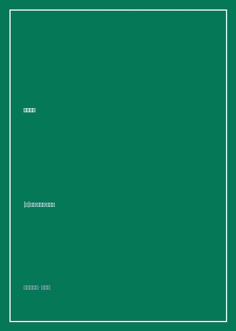

《与神对话》

总体观点
《与神对话》（Conversations with God: An Uncommon Dialogue, Book 1）是当代全球身心灵与灵性哲学领域流传最广、生命力最持久的现象级名篇。1992年春天的某个凄凉深夜，五十一岁的前广播主持人尼尔·唐纳德·沃尔什正深陷人生的绝望死胡同——健康恶化车祸断颈、第四次婚姻破裂、失业流浪靠在露天公园捡易拉罐维持生计。极度绝望的他抓起黄色横线信纸，给上帝写下了一封充满愤怒、怨恨与绝望拷问的控诉长信。
令他难以置信的是，当他写完最后一个愤怒问句时，右手笔尖仿佛被一股莫名的神圣力量牵引，在纸面上自动写下了第一行平静温和的文字：“你真的想知道这些问题的答案吗，还是仅仅在宣泄愤怒？”由此，一场颠覆传统宗教教条、跨越数年、直击生命宇宙本质的“不寻常对话”轰然拉开帷幕。
本书的核心哲学彻底推翻了传统天主教、基督教关于“一个坐在云端审判、惩罚与施加罪孽的暴君上帝”形象，将“神”重新定义为宇宙整体纯粹的生命意识大能。全书以极其清晰雄辩的逻辑指出：人类生命中只存在两种最根本的情感驱动——“爱（Love）”与“恐惧（Fear）”；人不是被创造出来经受原罪考验的受造物，而是神圣意识为了体验自身神圣性而在物质世界显化的“创造者（Creators）”。通过“思维-言语-行动”的三重创造闭环，每一个个体每时每刻都在自主塑造自己的现实。本书打破了关于金钱与灵性对立的伪清高，解密了亲密关系不是寻找另一半而是分享圆满的真谛，照亮了千万在意义荒原上迷茫探索的灵魂。
核心观点
-
1. 两大原初情感：一切人类行为的根本驱动要么是爱，要么是恐惧
宇宙中所有的负面情绪（嫉妒、贪婪、控制、愤怒）在本质上全部源自对匮乏与失去的“恐惧”；而所有的成长、宽容与自由皆源自充盈丰盛的“爱”。
伴侣之间的吃醋与查岗看似是出于深爱，但在底层逻辑上完全是对“对方会离开我、我将一无所有”的深深恐惧所驱动的占有防御。 -
2. 三重创造机制：思维是第一因，言语是指引，行动是最终显化
人并非现实的被动承受者，而是现实的绝对建筑师。起心动念是能量的初次发轫，坚定的言语确认会形成量子坍缩，而身体行动让实相最终在物质界结晶。
终日抱怨自己贫穷的人在潜意识中不断强化“我是匮乏的”这一核心信念，这种思维与言语在因果法则下必然吸引并创造出更加贫困的客观现实。 -
3. 神不在审判席上：宇宙没有惩罚与地狱，唯有自由意志的选择
神是终极的无条件之爱，绝不会设立地狱火坑惩罚自己的造物。所谓“业力与罪孽”不过是灵魂为了体验自身所选课题而自主设置的经验回音壁。
“如果我是一个需要你们下跪磕头、如果不信我就会把你们扔进硫磺火湖的上帝，那我岂不是一个比世间最狭隘的暴君还要残酷变态的恶魔？” -
4. 人际关系的终极使命：不要把另一个人当作修补自身空虚的拐杖
最高级的亲密关系不是两个残缺者拼凑成一个整体，而是两个自足圆满的灵魂相遇，共同作为镜子映照出彼此生命深处最高贵神圣的神性面向。
进入关系的初心不应当是“你能为我做什么、你能带给我多少安全感”，而应当是“我能在这段关系中展现出何等纯粹宽容的最高版本的自己”。 -
5. 拥抱物质与财富的丰盛：金钱是中性的神圣能量放大器
认为灵性修行必须忍受赤贫是中世纪宗教留下的自虐毒素。金钱是宇宙流动的纯净能量，带着感恩与创造之心赚取并运用财富，是对神圣丰盛的最好礼赞。
一个身无分文的善人只能为饥民流下同情的眼泪，而一个拥有巨额财富并心怀大爱的智者能够建造农场与医院挽救千万人的生命。
全书结构
-
第1至3章 痛苦与不公的根源（神圣对话的奇迹开启）
沃尔什在深夜写下愤怒抗议，笔尖开始自动书写神圣回答；探讨神为何不直接现身、苦难与疾病的形而上学必要性，界定爱与恐惧的两大驱动力。
沃尔什质问“为什么好人会遭雷劈受苦受难”，神回答“没有黑暗，光便无法显现；苦难是灵魂为了在对比中体验崇高而设立的背景板”。 -
第4至6章 创造法则与自由意志（打破审判与罪恶神话）
深入剖析思维、言语、行动的三位一体创造过程，论证为何人类是拥有无限自主权的造物主，彻底粉碎末日审判与地狱恐吓的千年迷思。
详述人类如何通过一次次无意识的消极负面信念投票，亲手创造了地球上的饥荒、战争与阶级压迫，指出神绝不干预自由意志选择。 -
第7至9章 亲密关系的救赎（从索取到神圣自我显化）
解构婚姻与恋爱的常见崩溃陷阱，传授如何在关系中彻底根除控制欲、嫉妒与依赖，使亲密关系成为照亮神圣灵魂的最高演练场。
神指出“如果你把婚姻建立在交易与绑架之上，它必然走向破裂；唯有将关系的目的是‘成全彼此成为真正的自己’，爱方得永恒”。 -
第10至14章 财富丰盛、身体健康与生命的终极目的
破除关于金钱的罪恶感心理障碍，探讨身心疾病的信念根源，总结生命的唯一终极目的——在每一个当下体验并创造你真正是谁的最高辉煌版本。
书末以神圣的祝福作结：“去吧，去成为你们世界里的光。不要去寻找光明，成为光明本身，让每一个遇见你的人都因你而感受到神的存在。”